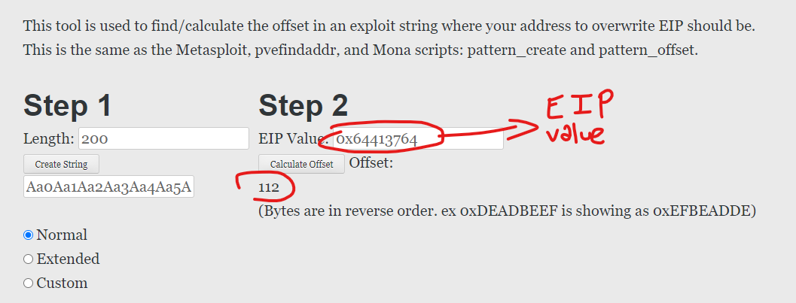

Selamlar. Normalde blogu komple ingilizce olarak devam ettirme kararı almış olsam da bazı konuları Türkçe devam ettireceğim.
Bugün biraz ROP nedir, ROP gadgetlar ne işe yarar bunlara değineceğiz ve örnek bir ret2libc atak senaryosu göstereceğiz. Fazla oyalanmadan başlayalım!
Nedir bu ROP?
Yazıya başlamadan önce lab ortamının stabil çalışması için ASLR (Address Space Layout Randomization) güvenlik önlemini devre dışı bırakmamız gerekiyor.
Linux:
echo 0 > /proc/sys/kernel/randomize_va_space
Windows:
[HKEY_LOCAL_MACHINE\SYSTEM\CurrentControlSet\Control\Session Manager\Memory Management]
MoveImages=dword:00000000

Buffer overflow, temelde programın bellekte kendine ayrılmış veri alanına, alması gerekenden daha fazla miktarda veri girişi olması durumunda programın kendine ayrılmış bellek alanından taşması ve bu taşmayı kullanarak kod çalıştırmaya yol açan bir zafiyettir.
Fakat bu senaryo her zaman anlatıldığı kadar kolay gerçekleşmeyebiliyor. Çünkü buffer overflow zafiyetlerini önlemek amacıyla geliştirilmiş bir takım güvenlik önlemlerimiz var.
Bu yazıda üstünde duracağımız ve önemli güvenlik önlemlerinden biri de bir çoğunuzun DEP(Data Execution Protection) olarak da bildiği NX (Non-executable) stack.
Bu güvenlik önleminin temel prensibi programa ayrılmış olan data segmentlerini non-executable yani yürütülemez olarak işaretleyip ve bu alanlara müdahaleyi engellemesidir.
Dolayısıyla siz bir buffer overflow zafiyeti bulsanız bile programınızın veri alanı non-executable işaretlendiği için dışarıdan kod enjekte edemiyor/ exploitation yapamıyorsunuz.
Tam bu noktada da ROP devreye giriyor!

Bu teknikte stacke dışarıdan herhangi bir kod enjekte edilmeden programın içerisindeki library/fonksiyonlar üzerinden işlem gerçekleştirildiği için bu yöntem DEP korumasına takılmaz.
İstismar aşamasında programa dahil edilmiş libraryler ve fonksiyonlar yardımı ile bir ROP chain oluşturarak exploitation işlemi gerçekleştirilir.
Bu tekniği anlayabilmemiz için ret instructionunu anlamamız gerekiyor.
Çünkü ROP gadgetler genellikle ret komutu ile biter. Laba geçmeden basitçe ret instructionun nasıl çalıştığından çok kısa bahsedeceğim.
- ret instructionunun açılımı Return from Procedure'dir.
- Stackte en üstte yazan değeri EIP(Instruction Pointer)'e yazar.
- Program yazılan adresten yürütülmeye devam edilir.
Örnek:
push 0x12345678 # Stacke 0x12345678 değerini push eder.
ret # Stackte en üstte yazan (0x12345678) değerini EIP'e set eder ve program bu adresten yürütülmeye devam eder.
bu bilgiyi yazının ilerleyen vakitlerinde ve binary exploitation ile uğraşırken sıkça kullanacağız. Aklımızın bir köşesinde dursun. Şimdi lab üzerinden devam edelim.
Basit bir C kodumuz var. Bu kodda hiç çağrılmamış bir rop() fonksiyonu ve değişkene 100 bytelik yer ayırıp argv[1] den aldığı veriyi değişkenin içine strcpy fonksiyonu ile kopyalayan runner_func fonksiyonumuz var.
Kodumuzu derliyor ve gdb'ye atıyoruz. Ben bu yazı boyunca gdb-peda kullanacağım. Labı tekrardan uygulayacak arkadaşlar < https://github.com/longld/peda > bu adresten kurulum yapabilirler.
gcc -m32 -fno-stack-protector -z execstack rop.c -o rop
 Programımızı çalıştırıp
Programımızı çalıştırıp b main ile main fonksiyonuna breakpoint attıktan sonra p rop komutu ile rop() fonksiyonumuzun adresini kontrol ediyoruz (0x565561ad).Atak senaryosuna geçmeden önce mantığı anlamak adına basit bir örnek yapıp rop fonksiyonunu çalıştıracak ve sonrasında exit edecek basit bir ROP chain hazırlayalım.
Test amaçlı 200 karakterlik bir payload göndererek stackimizin durumuna bakalım ; (Payload oluşturmak - yardımcı araçları kullanmak için https://projects.jason-rush.com/tools/buffer-overflow-eip-offset-string-generator/ adresini kullanabilirsiniz.)
Taşma işlemimizi başarıyla gerçekleştirdik. Şimdi exploit işlemini sağlıklı gerçekleştirmek için kaç byteden sonrasının EIP'e yazıldığını yani kaç karakterlik bir payload göndermemiz gerektiğini kontrol edelim;  112 sonucunu aldık. Yani 112 byte'dan sonra yazdığımız her şey EIP'e (instruction pointerimize) etki edecek.
p exit diyerek exit komutumuzun da adresini alalım.
Payloadımızı oluştururken programın crash vermeden işlemleri sırasıyla yapması için şu şekilde bir ROP chain oluşturacağız;
112 * A + rop() address + exit address
yani
./rop "$(python2 -c 'print "A"*112 + "\xad\x61\x55\x56" + "\xc0\x71\xdb\xf7"')"
Gördüğünüz gibi programda bulunan fakat çağrılmamış bir fonksiyonu çağırmayı başardık.Bu basit örnekte işin detayına inmedim. Bu basit örnek ile altta işleyeceğimiz senaryo birleştiğinde daha detaylandırarak herşeyi anlaşır kılacağız.
Şimdi bu senaryoyu bir tık daha ileri taşıyalım ve Ret2libc atak senaryosu örneği yapıp biraz daha işin derinlerine inelim.
Programımızı tekrardan gdb'ye atıyoruz.
b main komutunu kullanarak main fonksiyonumuza breakpoint atıyor ve programımızı başlatıyoruz. Atak senaryomuza başlamadan önce programa dahil edilmiş libraryleri ldd aracılığı ile kontrol edelim.
Resimde gördüğümüz gibi standart libraryimiz olan libc programımıza include edilmiş gözüküyor. Atak senaryomuzu gerçekleştirmek / shell alabilmemiz için bu kütüphaneyi kullanacağız.
Programımız breakpoint bıraktığımız yerde durduktan sonra system, exit ve libc kütüphanemiz içinde shell almamıza yarayacak olan "/bin/sh" adresini ve programdaki çağrıların adreslerini kontrol ediyoruz. Kütüphanemizle alakalı bilgileri, ilgili adreslerimizi edindik. Bir önceki örnekten ne kadar uzunlukta bir payload göndermemiz gerektiğini ve EIP adresini bildiğimiz için bu işlemleri tekrarlamıyorum.
Bir önceki örnekten sonra bu örnekte kafanızda bir şeyler şekillenmiş olacaktır muhtemelen.
Normal buffer overflow zafiyetlerinde EIP'yi taşıracak uzunlukta payload gönderilir ve EIP'ye etki edecek kısıma shellcode enjekte edilir.
Fakat şuan elimizdeki program NX korumalı olduğu için böyle bir şansımız yok. Bu yüzden Ret2libc atağında bu durumdan farklı olarak dışarıdan bir shellcode enjekte etmeden programın içerisindeki kütüphaneler / fonksiyonlar yardımı ile bu işlemleri gerçekleştireceğiz.
Dolayısıyla herhangi bir DEP önlemine takılmadan senaryomuzu tamamlayabileceğiz.
 find komutu ile kontrol ettiğimiz libc kütüphanesindeki /bin/sh 'nin adresini bu noktada kullanacağız.
find komutu ile kontrol ettiğimiz libc kütüphanesindeki /bin/sh 'nin adresini bu noktada kullanacağız. Oluşturacağımız ROP chain aşağıdaki gibi olacak;
JUNK (108 * A padding) + BBBB (4 byte EBP padding) + "system" call + "exit" call + address of "/bin/sh" we found in libc
(exit çağrısını neden yaptığımızı aşağıda anlatacağım.)
Payloadımızı tekrardan şekillendiriyoruz;
./rop `python2 -c 'print "A"*112 + "\xb0\x4c\xdc\xf7" + "\xc0\x71\xdb\xf7" +"\xf5\x60\xf3\xf7"'`
ROP zincirimizi oluşturduk. (108 byte * A JUNK + 4 byte EBP space + system addr. + exit addr. + /bin/sh)
g0t shell! Dışarıdan herhangi bir shellcode göndermeden sadece programın kendi içindeki kütüphanelerini kullanarak shell aldık. Biraz detaylandırmak gerekirse;
Yukarıda 200 karakterlik bir payload gönderdikten sonra EIP adresimize 112 karakterden sonra yazabildiğimiz bilgisini aldık. 112 karakterden sonra yazdığımız şeyler programın ilerleyişini belirleyecek.
Yukarıdaki ROP zincirimizde dönüş adresimizi system fonksiyonunun çağrı adresine yönlendirdiğimizde ESP değerimiz 4 bayt artacaktır.
 ROP chainlerde dikkat edilmesi gereken en önemli husus ROP gadgetlerinin zincirde doğru yerlerde olmasıdır.
ROP chainlerde dikkat edilmesi gereken en önemli husus ROP gadgetlerinin zincirde doğru yerlerde olmasıdır.İşlemci anatomisi gereği her veri stackte little-endian yapıda tutulduğu için system fonksiyonu çağrısını 112 karakter padding payloadımızdan sonra yazdık.
Yukarıda system çağrısından sonra exit vermek yerine rastgele 4 byte junk bir değer yazmış olsaydık ne olurdu? Deneyip görelim. İşte exit çağrısı burada ufak ama güzel bir önlem taşıyor.
Eğer exit adresi yerine 4 byte herhangi bir karakter yazsaydık programımız yine bize shell verecekti.
Fakat shellden çıktığımızda program crash verecekti. Sağlıklı bir dönüş olması için crash vermesini önlemek adına exit adresimizi kullanarak programımızdan crash vermeden çıkışımızı sağladık.
Yukarıda anlattığımız çağrı adrese yönlendirilip yürütme tamamlandığında ESP değerimiz 4 bayt artacaktır.
Dolayısıyla bufferimiz bu adresi başka bir dönüş adresi olarak değerlendirilecektir.
/bin/sh ' yı rop chainimizde doğru konumlandırmak için bu dönüş adresinden 4 byte sonrasına system fonksiyonumuzun argümanı olan /bin/sh adresini vermemiz gerekiyordu.
Ve düzgün bir ROP zinciri ile basit bir Ret2Libc atağı! Başka bir yazıda görüşmek üzere. ROP gadgetlerinin gerçek bir sistem üzerinde nasıl kullanıldığını görmek isterseniz geçtiğimiz aylarda çıkan WatchGuard Firebox ürününde çıkmış RCE zafiyetinin teknik analizini aşağıdaki linkten inceleyebilirsiniz.
İncelemenizi tavsiye ederim
Diving Deeper into WatchGuard Pre-Auth RCE - CVE-2022-26318
Kaynakça:
Introduction to return oriented programming (ROP)Lab 08 - Return-Oriented Programming